WES Toshiba - Dépanner le WES
Règles générales pour le dépannage
Afin de permettre à l'équipe Support Doxense® d'établir un diagnostic de panne rapide et fiable, merci de communiquer le maximum d'informations possible lors de la déclaration de l'incident :
-
Quoi ? Quelle est la procédure à suivre pour reproduire l'incident ?
-
Quand ? A quelle date et à quelle heure a eu lieu l'incident ?
-
Où ? Sur quel périphérique et depuis quel poste de travail a eu lieu l'incident ?
-
Qui ? Avec quel compte utilisateur s'est produit l'incident ?
-
Fichier trace Watchdoc.log : merci de joindre le fichier de trace Watchdoc.
-
Fichier de traces WES : merci d'activer les fichiers de trace sur chaque file pour laquelle vous avez constaté un incident.
Une fois ces informations rassemblées, vous pouvez envoyer une demande de résolution depuis le portail Connect, outil de gestion des incidents dédié aux partenaires.
Pour obtenir un relevé optimal des données nécessaires au diagnostic, utilisez l'outil Watchdoc DiagTool fourni avec le programme d'installation de Watchdoc (cf. Créer un rapport de logs avec DiagTool).
Activer les traces du WES (WEStraces)
Pour effectuer un diagnostic du problème rencontré sur les applications embarquées, il convient d'activer les fichiers traces (logs) spécifiques aux communications du WES.
Pour activer les traces :
-
dans l'interface d'administration web de Watchdoc, depuis le Menu Principal, cliquez sur Files d'impression ;
-
dans la liste des files, cliquez sur la file dotée du WES pour lequel vous souhaitez activer les fichiers traces ;
-
dans l'interface de gestion de la file, cliquez sur le bouton Propriétés ;
-
dans la rubrique [Nom_du_WES], cliquez sur le bouton Editer la configuration :

-
dans la section WES > Diagnostic, cochez la case Activer les traces ;
-
dans la liste Niveau de traces, sélectionnez :
-
Auto : conserve les traces standard ;
- Inclure les contenus binaires : conserve les traces détaillées.
-
- dans le champ Chemin, indiquez le chemin du dossier dans lequel doivent être enregistrés les fichiers de trace. Si vous laissez le champ vide, les fichiers trace seront enregistrés par défaut dans le dossier d'installation Watchdoc_install_dir/Logs/Wes_Traces/QueueId :


Travaux de numérisation, fax et photocopie non comptabilisés
Si les travaux de numérisation, fax et photocopie ne sont pas comptabilisés par Watchdoc, vérifiez que l'adresse (nom d'hôte ou IP) du serveur Watchdoc configurée dans le périphérique est correcte :
-
dans l'interface de configuration de la file, dans la section WES, cliquez sur le bouton Etat de l'application (affiché lorsque le WES est correctement installé) ;
-
cliquez sur le bouton Télécharger afin de télécharger les fichiers de logs et de configuration du WES ;
-
si la configuration de l'adresse et/ou des ports n'est pas correcte, cliquez sur le bouton Configurer de l'interface de configuration de la file ;
-
vérifiez que la procédure a réglé le problème.
Impossibilité de s'authentifier depuis le WES - Lenteurs constatées sur le périphérique - Novembre 2025.
Contexte
Après mise à jour en Watchdoc v. 6.1.1., les utilisateurs n'arrivent plus à s'authentifier depuis le WES : après saisie du code ou présentation du badge, le périphérique semble traiter l'information pendant environ 40 secondes, mais revient à l'interface d'accueil.
L'anomalie est résolue après redémarrage du périphérique, mais elle réapparaît très rapidement.
Dans le journal, on constate effectivement que la réponse à la commande <deviceRecord:getLog> est anormalement longue.
Depuis la page web du périphérique, il est impossible d'afficher le journal des travaux (chargement infini).
Cause
Ce problème est lié au journal des travaux (job log) qui peut ralentir le fonctionnement du périphérique lorsqu'il est trop lourd.
Résolution
Il convient de modifier la valeur du paramètre "Journal des travaux" configuré dans le profil WES associé au périphérique (cf. Configurer le profil WES).
Nous recommandons d'utiliser la valeur 0 permettant une purge automatique ou de limiter le nombre de jours de rétention pour éviter ces lenteurs.
Attention : il arrive qu'une valeur supérieure à 0, même peu élevée, provoque des dysfonctionnements.
Message dans l'interface d'administration TopAccess : Données de journal effacées
Juin 2025
Contexte
Dans l'interface d'administration d'un périphérique Toshiba TopAccess, sous l'onglet Journaux > Afficher les journaux, l'administrateurqui souhaite consulter le journal des impressions (jobs log). Or, il constate que le journal a été effacé : message "Données de journal effacées" :
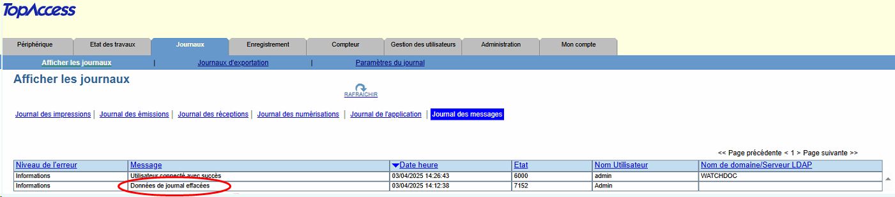
Cause
Il s'agit d'un fonctionnement automatique du WES qui efface systématiquement les journaux des impressions (jobs log).
Résolution
Ce fonctionnement automatique a été modifié.
Pour résoudre ce dysfonctionnement, il convient donc de mettre Watchdoc à jour en v. 6.1.0.5290 min (cf. Packages et notes de versions).
Message d'erreur - The remote SOAP service failed while processing request 'unknown': User is operating the panel
Contexte
Lors de la désinstallation du WES Toshiba Open Platform, l'opération se déroule bien jusqu'à la ligne Set MDS settings qui affiche le message d'erreur suivant : The remote SOAP service failed while processing request '<unknown>': User is operating the panel:
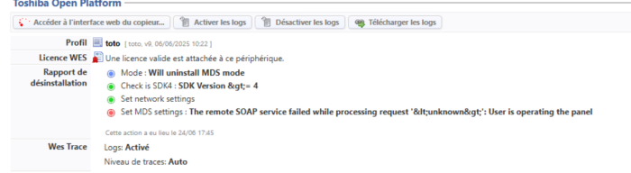
De fait, sur l'écran du périphérique, le WES reste affiché (écran d'authentification) :
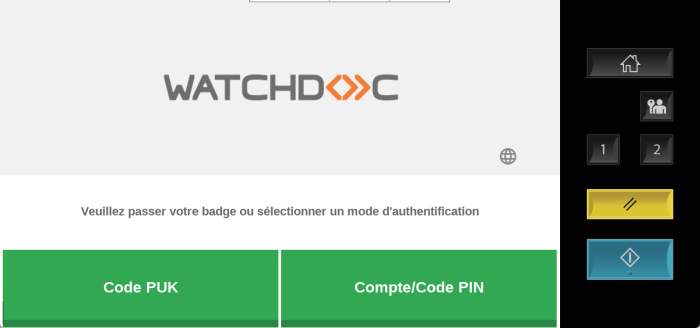
Résolution
Pour résoudre le problème, il convient d'appuyer 2 fois sur le bouton de l'écran du périphérique pour faire disparaître le WES et afficher de nouveau la page d'accueil originale du périphérique :
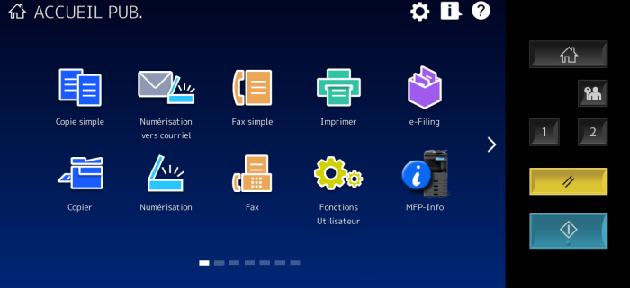
Message d'erreur - Error while starting a newformat breakdown: Invalid object name 'dbo.formatbreakdown'" + message "Internal Server Error" sur le WES
Contexte
Alors que les quotas sont configurés sur le WES Toshiba, lors de la validation d'un travail d'impression, l'utilisateur voit s'afficher le message "Internal Server error" sur le WES.
Lors de l'analyse, le message "Error while starting a newformat breakdown: Invalid object name 'dbo.formatbreakdown'" apparaît dans les fichiers traces (logs).
Cause
Ce problème peut être lié à la configuration des quotas qui nécessite une base de données spécifique.
Résolution
Pour résoudre ce problème, il est nécessaire de compléter l'installation du WES après les étapes d'installation :
-
connectez-vous au serveur SQL en tant qu'administrateur ;
-
ouvrez le fichier mssql_formatbreakdown46.sql de manière à pouvoir en copier le contenu ultérieurement ;
-
ouvrez SQL Server Management Studio ;
-
dans l'interface Connect to Server, saisissez les informations suivantes :
-
le nom du serveur :
-
le type d'authentification, complété du Login / Mot de passe si nécessaire.
-
-
dans l’arborescence de gauche, déployez le niveau Bases de données (Databases)
-
repérez watchdocstats et cliquez droit ;
-
sélectionnez Nouvelle requête (New Query)
-
dans la page de droite, collez le contenu du script mssql_formatbreakdown46.sql ;
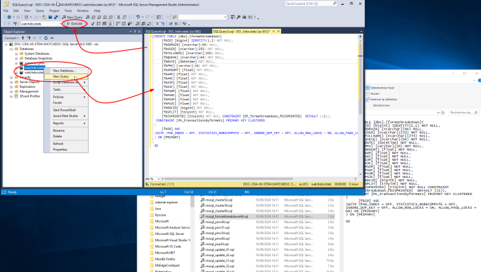
-
puis cliquez sur le bouton Exécuter (Execute) ;
-
Un message vous informe du succès de l'exécution du script :
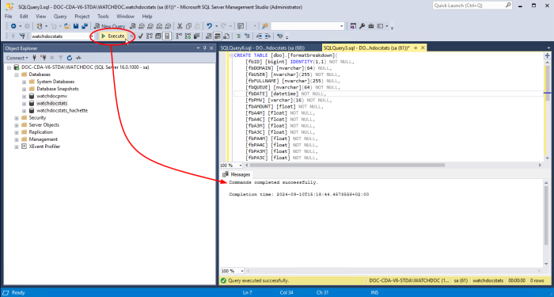
-
accédez au serveur Watchdoc en tant qu'administrateur ;
-
ouvrez le fichier config.xml (par défaut : C:\Program Files\Doxense\Watchdoc\config.xml) avec un éditeur de texte ;
-
dans la section /config/checkout, ajoutez la ligne <use-formatbreakdowntable>true</useformatbreakdowntable>;
-
quittez SQL Server Management Studio et redémarrez le service Watchdoc ;
èvérifiez que l'impression s'exécute bien sur le WES, et que les quotas sont bien pris en compte.
InternalServerError. An Internal error occurred. Doxense.data.JsonDv.JsonDbException: Database must be initialized before any operation.
Contexte
Lors de la configuration d'un WES Toshiba v3 avec la fonction d'interserveur activée, l'installation se déroule correctement, sans message d'erreur. La configuration sur le copieur et l'interface EWB est correcte.
Mais à l'utilisation, le message d'erreur suivant s'affiche sur l'écran du périphérique : 500 InternalServerError "an Internal error occurred" Doxense.data.JsonDv.JsonDbException: Database must be initialized before any operation.
Cause
Ce message survient lorsque la fonction "interserveur" de Watchdoc est activée, mais que la base de données interserveur n'est pas connectée au démarrage du serveur Watchdoc ou a été déconnectée
Résolution
Pour résoudre ce problème, il confient de redémarrer la base de données interserveur, de la reconnecter au serveur Watchdoc ou de vérifier sa configuration (cf. Activer la fonction d'impression interserveur).
Délai avant impression
Contexte
Quand un utilisateur envoie un document sur une imprimante réseau ciblant un serveur d'impression, il faut attendre un délai d'une vingtaine de secondes avant que le document ne commence à être spoulé puis envoyé au serveur.
Cause
Ce problème est dû au pilote qui envoie des requêtes SNMP au serveur d'impression en pensant qu'il s'agit d'un périphérique. Chaque requête provoque un temps d'attente avant arrêt.
Résolution
Pour résoudre ce problème, désactivez la bidirectionnalité dans les propriétés de la file d'impression à partir de son interface de configuration :
-
dans la liste des périphériques installés sur le serveur, sélectionnez le périphérique Toshiba ;
-
cliquez droit et, dans la liste, sélectionnez Propriétés ;
-
Sous l'onglet Port, vérifiez que la case "Activer la gestion du mode bidirectionnel" est désactivée :
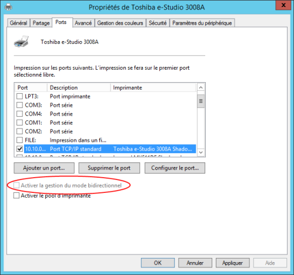
-
Sous l'onglet Paramètre du périphérique, vérifiez que la case "Mise à jour auto" est décochée :
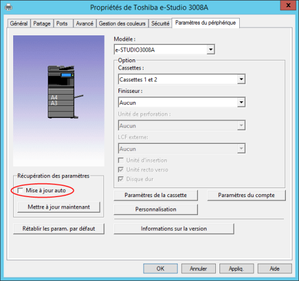
-
Sous l'onglet Avancé, cliquez sur le bouton Impression par défaut > Onglet Autres
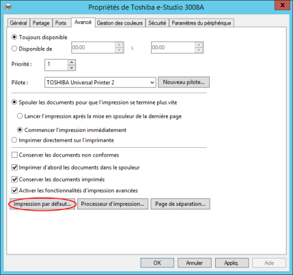
-
Vérifiez que la case Communication SNMP est bien désactivée :
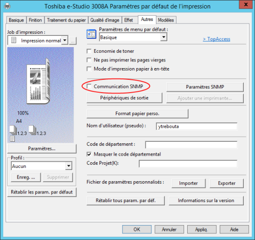
Erreur de certificat SSL
Contexte
Un message intitulé Erreur de certificat SSL vous demande si vous souhaitez forcer l'accès au périphérique d'impression.
Cause
Ce message est normal, informant simplement que le certificat web utilisé par le serveur est auto-signé et ne peut donc être vérifié par le périphérique.
Résolution
Pour ne plus voir ce message, vous devez ajouter le certificat web dans le périphérique afin qu'il puisse être testé.
-
Téléchargez le certificat depuis server Watchdoc :
-
depuis le Menu principal de Watchdoc > section Configuration, cliquez sur Configuration Avancée > Configuration système ;
-
dans l'interface Configuration système > Section DSP, cliquez sur le bouton Exporter le certificat ;
-
-
dans le site web d'administration du périphérique Toshiba, rendez-vous ans l'onglet Administration > Security > section Certificate Management :
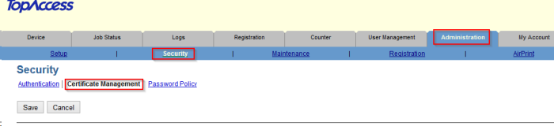
-
Sélectionnez le choix CA Certificate (DER) et cliquez sur le bouton Upload pour télécharger le certicat Watchdoc :
Authentification utilisateur
Contexte
Lors d'une impression sur un périphérique Toshiba, l'authentification peut ne pas être fonctionner et l'utilisateur remplacé par l'identifiant ?META\PrintOpe (rôle par défaut du périphérique).
Cause
Ce message est affiché quand le périphérique Toshiba envoie à Watchdoc le rôle par défaut du périphérique à la place de l'identifiant de l'utilisateur.
Résolution
Pour résoudre ce problème, vous devez désactiver l'authentification utilisateur pour l'impression sur le périphérique :
-
dans le site web d'administration du périphérique Toshiba, cliquez sur Administration > Security > Authentication ;
-
dans la section paramètres d'authentification utilisateurs, vérifiez lesparamètres :
-
Authentification utilisateurs : activée ;
-
Authentification par fonction > Impression : désactivée.
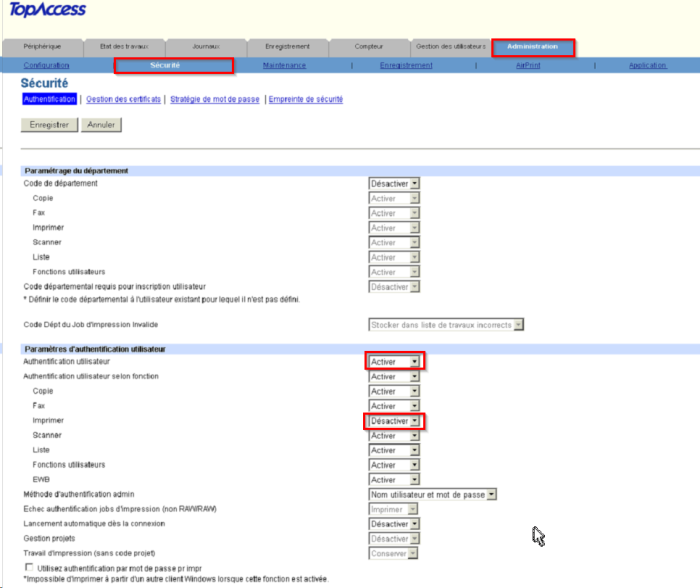
-
Désinstallation manuelle du Wes
Contexte
Il peut arriver, notamment après une période de tests sur le périphérique Toshiba e-Bridge-N, que ce dernier ne soit plus connecté et ne parvienne plus à s'interfacer avec le serveur d'impression Watchdoc.
Dans ce cas, il devient impossible de désinstaller le WES du périphérique depuis l'interface d'administration de Watchdoc. Pour retrouver l'usage du périphérique, il est donc nécessaire de désinstaller le WES depuis l'interface d'administration du périphérique Toshiba e-Bridge-N.
Procédure
Pour désinstaller le WES manuellement depuis le périphérique :
-
à l'aide d'un navigateur, accédez à l'interface d'administration du périphérique (TopAccess) ;
-
dans l'onglet Administration, authentifiez-vous avec les compte et mot de passe administrateur ;
-
dans l'onglet Configuration, cliquez sur Général ;
-
dans la liste des paramètres, désactivez le Mode MDS ;
-
cliquez sur Enregistrer pour valider les modifications apportées au paramétrage.
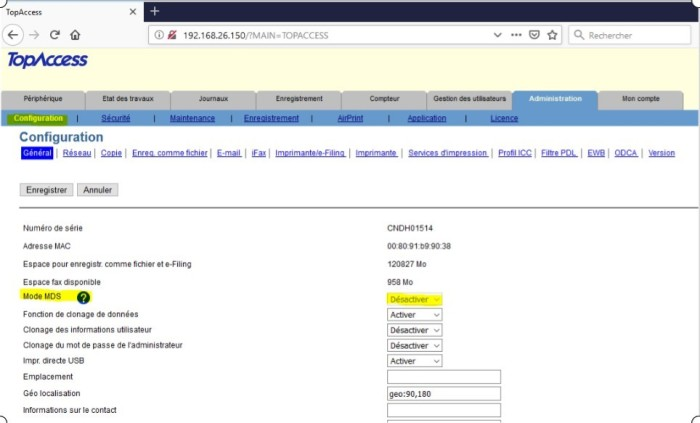
-
cliquez ensuite sur l'onglet Sécurité ;
-
cliquez sur l'entrée Authentification ;
-
dans la section Paramètres d'authentification utilisateur, désactivez l'authentification utilisateur :
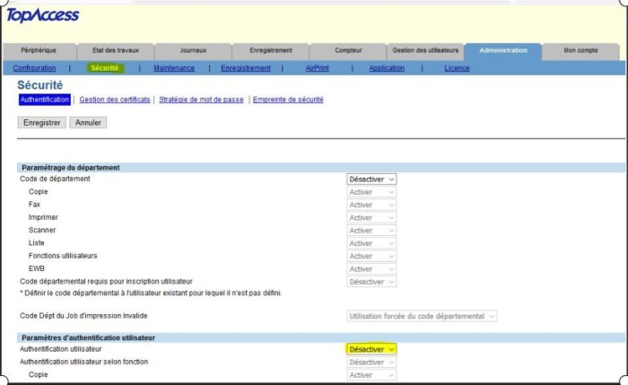
-
cliquez sur Enregistrer pour valider les modifications apportées au paramétrage.
èDès lors, Watchdoc est désinstallé et le périphérique peut donc fonctionner normalement.
Erreur lors de l'installation : Cannot install, too many application already installed
Contexte
Lors de l'installation du WES Toshiba, le message d'erreur suivant s'affiche dans le rapport d'installation :
"Set environment settings: Cannot install, too many application already installed" :
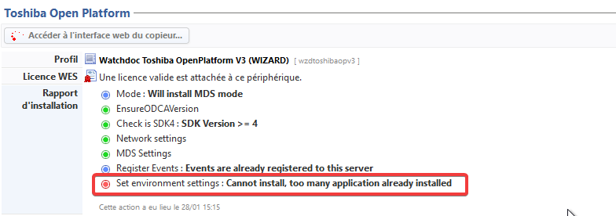
Cause
Toutes les applications installées sur différents serveurs sont sauvegardées sous forme d'URL, qui finissent par sature l'environnement dans lequel le WES doit être installé.
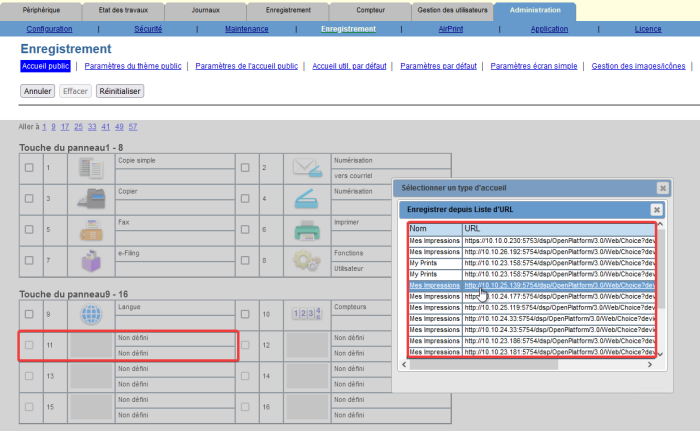
Résolution
Pour résoudre le problème, il convient de supprimer ces différentes URL :
-
depuis l'interface d'administration du périphérique Toshiba, cliquez dans le menu Administration > Configuration > EWB :
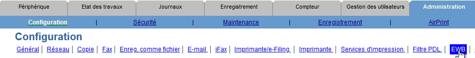
-
dans la section Paramètre d'enregistrement sur le serveur et Liste d'url pour l'écran d'accueil, supprimez toutes les adresses serveurs et adresses URL visibles :
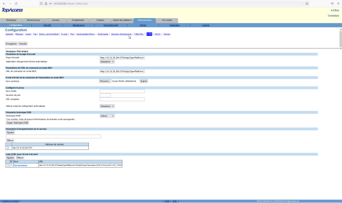
Message d'erreur : "Ce périphérique n'a pas de licence valide et sera rejeté par ce serveur"
Contexte
Quand le WES est associé à une file d'impression, il arrive que, suite à une panne du serveur ou du spouleur MS Windows, le nombre des licences WES ne s'affiche pas dans les propriétés de cette file (Menu principal > File d'impression + sélection d'une file > Propriétés).
Par ailleurs, ce problème est tracé dans les logs Watchdoc (enregistrés par défaut dans C:\Program Files\Doxense\Watchdoc\logs\Watchdoc.txt), où un message d'erreur JSON Xerox apparaît en phase de démarrage du service.
Résolution
Pour résoudre ce problème, appliquez la procédure suivante :
-
vérifiez que le serveur est à jour avec la dernière version Watchdoc ;
-
vérifiez si l'erreur JSON est présente au démarrage du service ;
-
inventoriez les files n'affichant pas correctement les licences ;
-
rendez-vous dans le dossier c:\Program Files\Doxense\Watchdoc\Data\queues.jsdb ;
-
dans ce dossier, repérez les fichiers des files qui posent problème et renommez-les "NOMSERVEUR.QUEUES_OLD" ;
-
redémarrez le service Watchdoc ;
-
vérifiez dans les propriétés de la file que les licences WES s'affichent correctement.